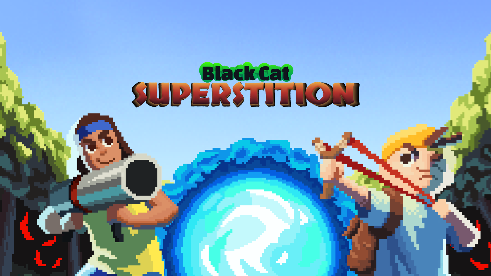
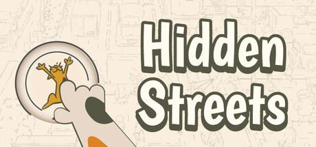
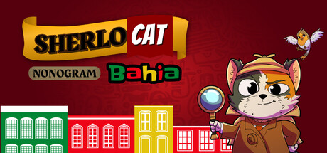
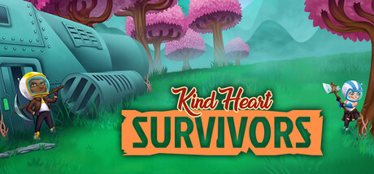
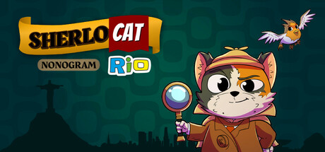
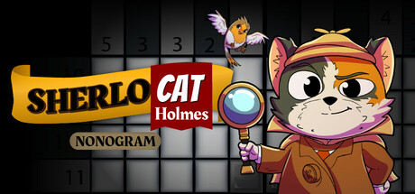

Factsheet
- Developer: LUDO Thinking
- Based in: Brazil
- Founded: 2018
- Website: ludothinking.com
- Press contact: renata@ludothinking.com
- Social Media:
Description
A small Brazilian game studio founded by Renata Machado and Anna Barbosa. Since 2018, creating games, learning from each one, and striving to improve — one game at a time.
Games
-

Superstition Black CAT
A roguelite where superstitions take shape as items! Face enemies, collect drops with negative effects that can be traded for advantages. Explore ever-changing rooms filled with challenges inspired by beliefs that make us think twice before taking a risk.
Release: 2027 -

Hidden Streets
Hidden Streets is a hidden object inspired by the classic Where´s Waldo. Each level features a street full of characters, curious events, and small stories happening at the same time.
Release: Dec 2026 -

Sherlocat Nonogram Bahia
SherloCAT Nonogram Bahia is the third title in the SherloCAT Nonogram series. A logic puzzle game based on nonograms, set in 12 locations across Bahia, Brazil. Each region features 10 unique puzzles that reveal illustrations inspired by local culture.
Release: Jun 2026 -

Kind Heart SURVIVORS
Kind Heart Survivors is the newest survival adventure from the Brazilian indie studio LUDO Thinking.
Release: Nov 2025 -

Sherlocat Nonogram Rio
SherloCAT Nonogram Rio is the second title in the SherloCAT Nonogram series. A logic puzzle game based on nonograms, set in various locations across Rio de Janeiro, Brazil.
Release: Jul 2025 -

SherloCAT Holmes Nonogram
SherloCAT Holmes Nonogram is a logic puzzle game based on nonograms, set in different locations across Espírito Santo, Brazil.
Release: Out 2024 -
Kind Heart DEFENDERS
Kind Heart Defenders is a space shooter mixed with tower defense, featuring themed stages.
Release: Dec 2022